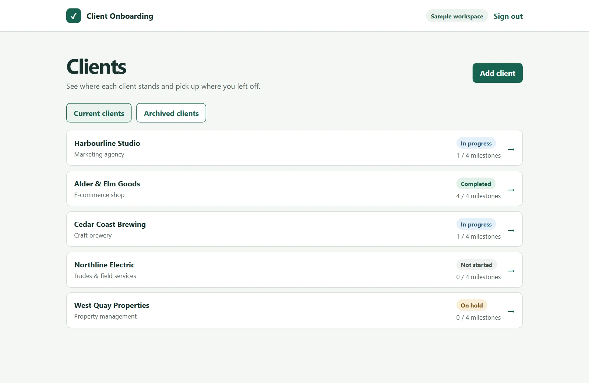

Workflow automation / Case study
Client Onboarding.
An onboarding portal that shows a business owner where each client stands and which task can move the work forward.

Implementation
Engineering notes.
Keeping the next step clear
Each client starts with four ordered milestones. Completing the active checklist opens the next milestone. Owners can pause a client and resume with the previous progress intact.
Due dates in local time
Checklist dates use the Vancouver calendar. The portal flags overdue work and distinguishes items due today from those due tomorrow.
Preserving client history
An activity log records who changed a client and when. Archiving keeps the plan and history together, and restoring the client makes the workflow editable again.
